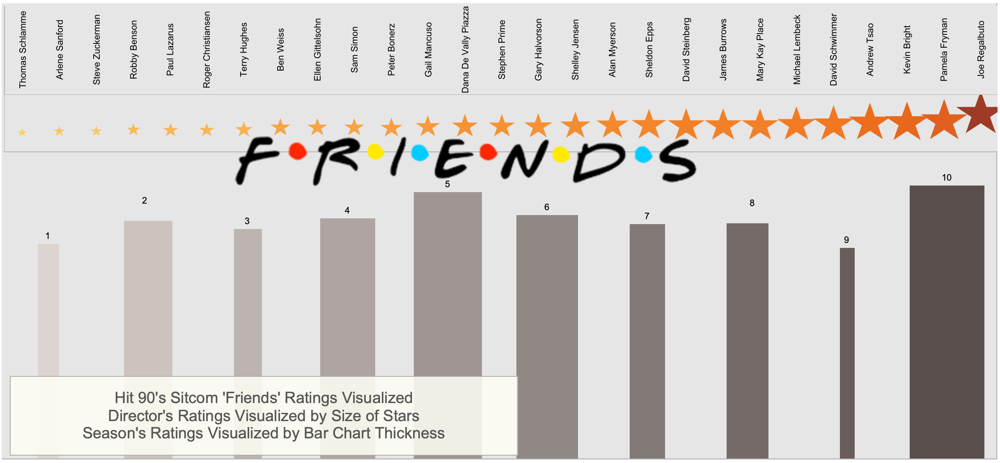

Friends Visualization
Pictured above, see the final visualization of the friends data set from Kaggle

The original data is pictured to the right:
I then cleaned the data in excel instead of SQL because of the dataset's small size.
From this visualization, it is made clear that season 10 was the best-rated season, and it is easy to find the worst-rated season. The same information can be read when it comes to the average ratings of each director.
From quick research, we can learn that the stars of Friends salaries drastically increased as the seasons went on, this makes sense following their consistently good ratings. Visualizations of Data like this allow us to draw all kinds of insights and trends regarding a dataset. These insights and trends would simply not be possible by just looking at a raw dataset.